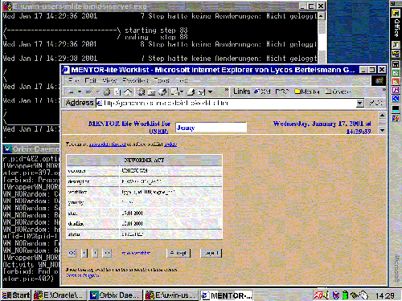

| Next Step |
Jenny's Work Item
 |
| (click on figure to enlarge) |

In the single-work-item view the user can start the activity or reject it by pressing the corresponding button, "Accept" or "Reject". The user can also navigate through all activities without going back to the list view.
The activity is started when the user clicks the "Accept" button ...
| Next Step |